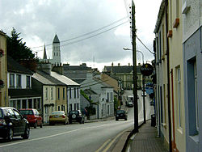

Belturbet Web
'Home of the Rories'
Contact us on

Table Of Contents |
History Of BelturbetBelturbet, co.cavan is a friendly warm town. filled with the welcoming citizens of belturbet. Its situated in the west of cavan, Nesting along the banks of the river Erne. The name Belturbet originally spelt beal tair beat means the opening to the nearby tairbert island. The River Erne was the main mode of transport. Many strenuous battles were fought on this ground. It is used for many things including fishing, rowing, canoeing and boat trips along the river banks.Belturbet Railway station which opened in 1885 was built and operated by the great northern railway company of ireland. The station served as the connecting point for the great northern railway broad rauge and the cavan and leitrim railway narrow gauge railway lines. photo gallery  |